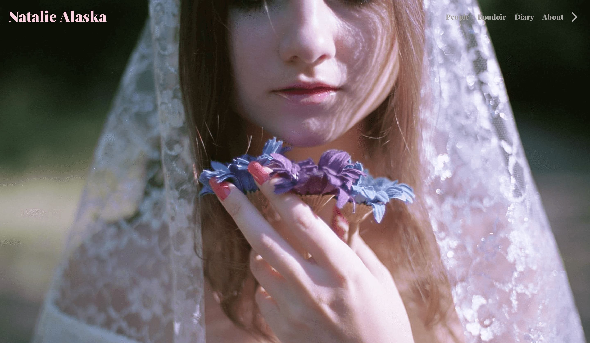
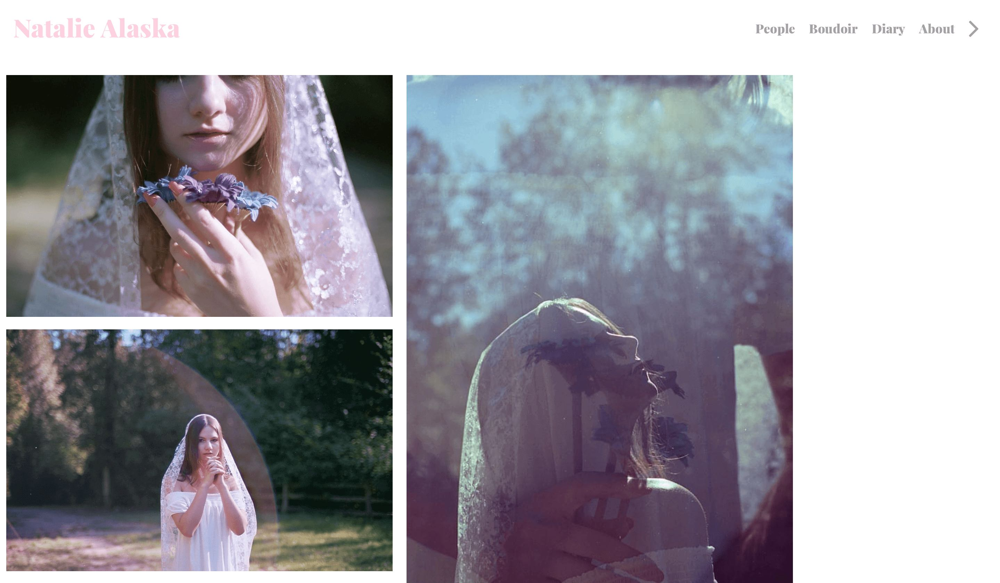
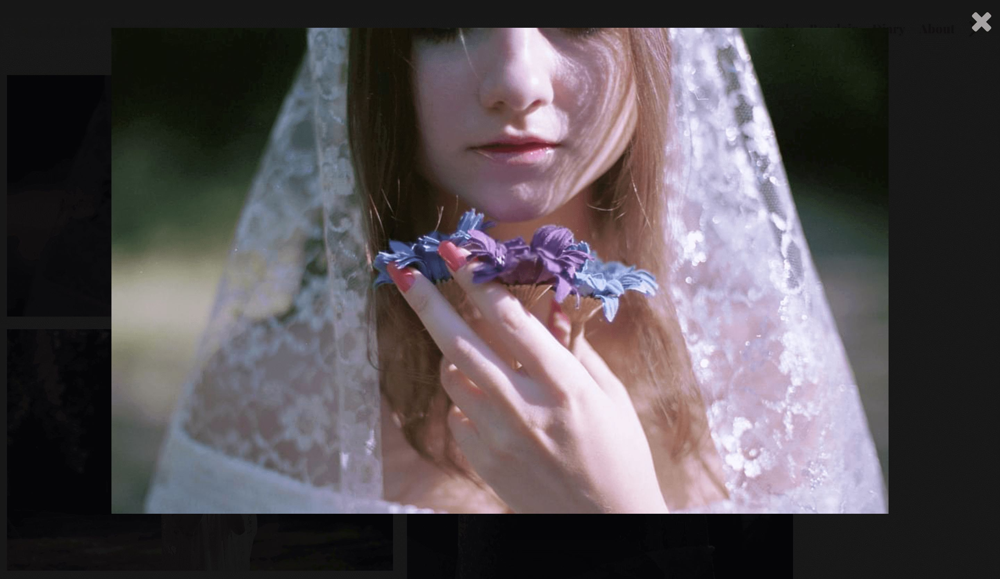
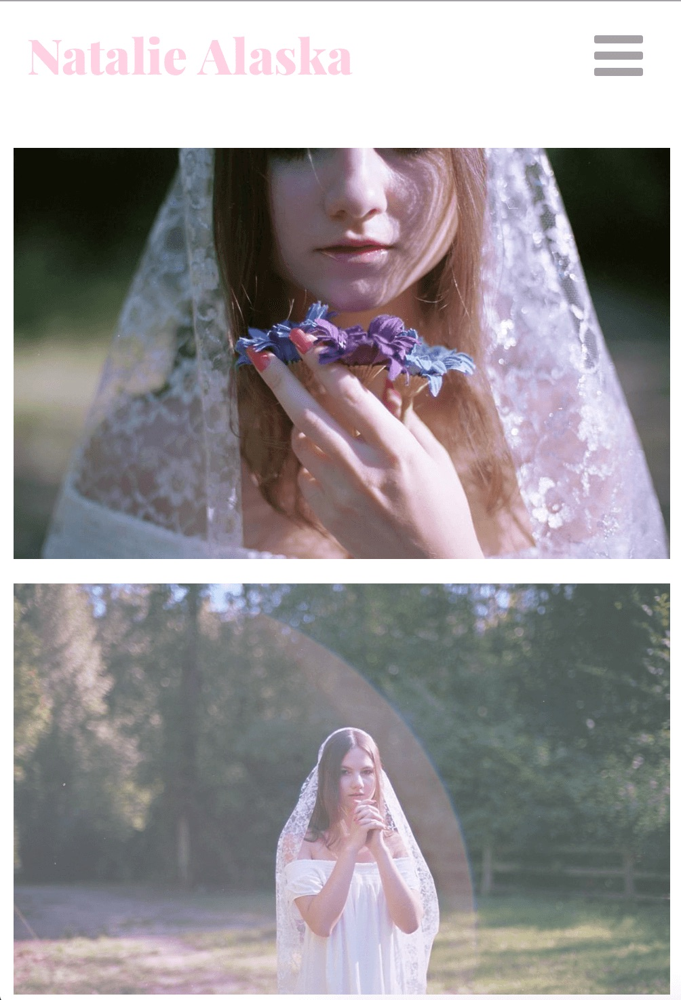
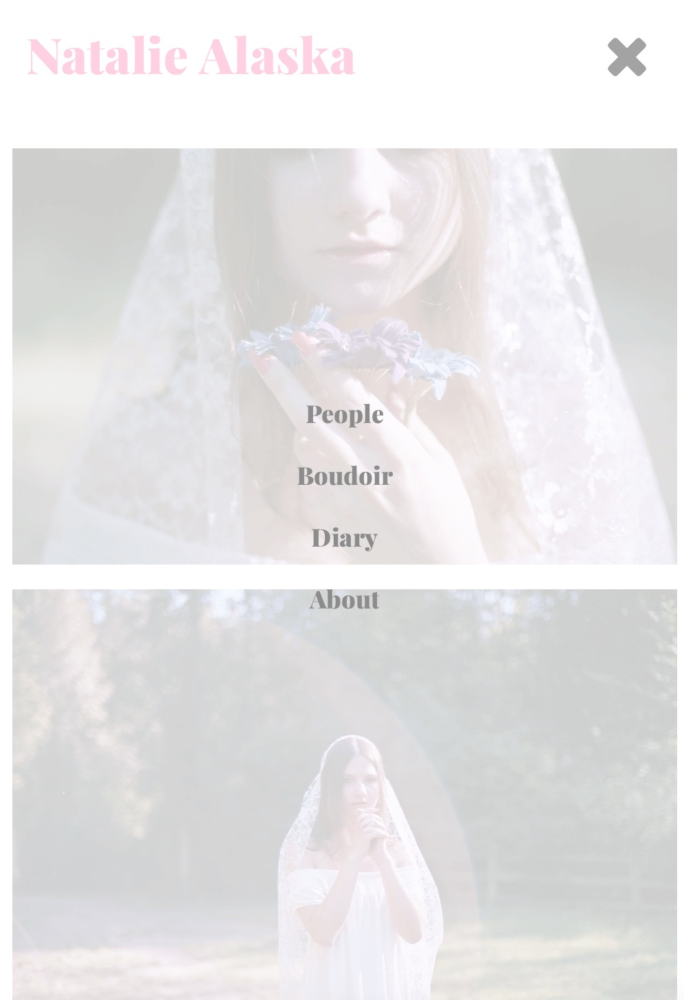
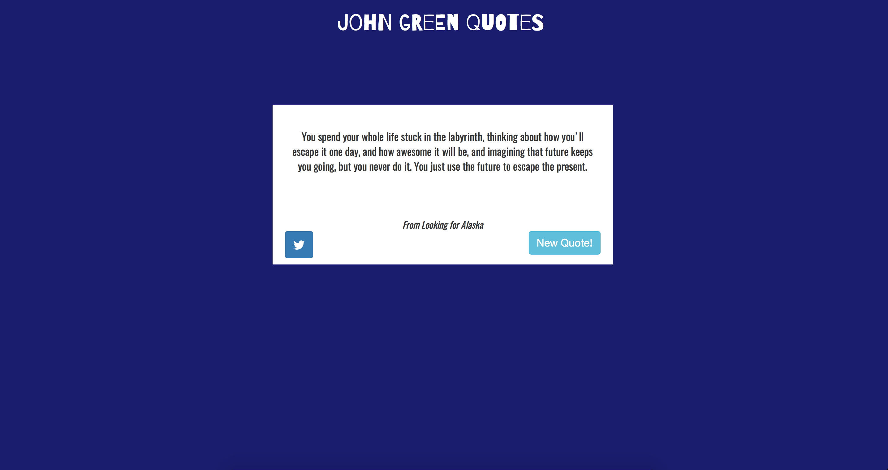
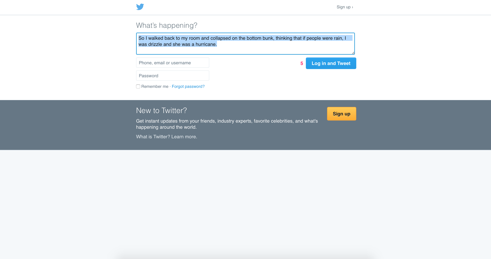

My name is Natalie Ngan and I am currently in the Bachelor of Computer Science (BCS)
Second Degree program at the University of British Columbia (UBC). In 2014, I graduated
with a Bachelor of Arts degree, majoring in Psychology (also at UBC). After working at a
telecommunications company for 4 years and troubleshooting my clients' phones,
I've realized that my passion lies in creating technology that people can enjoy without
frustration. So now I'm setting out to merge my background in psychology with computer
science to bring user-friendly technologies into the world.
Outside of coding, I'm a fashion photographer and a motorcycle rider (I own a black Yamaha R6).
Some say I'm crazy for riding a motorcycle, but I love a good adventure, which is why I've decided
to join comp sci!
This website showcases the personal projects I've done out of pure curiosity as I explored the
mysterious world of coding.
Aside from coding, photography is my greatest passion; what better way to combine
my two loves than to create a website that showcases both?
During my internship at SAP Vancouver, I learned about the
React-Redux architecture. Wanting to get hands-on experience with it, I decided to
convert my exising website to React-Redux, using ES6. To incorporate responsive design, I created
a custom navbar component that tracks the state of the browser's width and converts to a custom
hamburger menu for smaller device, as well as a Pinterest-style
gallery that reflows into single lane of images. Using Redux,
I created a lightbox component that updates when user selects/deselects an image.
Through this project, I learned about webpack and code-splitting techniques such as asset
caching and chunking to optimize load time.





After taking a course on design patterns and Java, I wanted to further practice by creating
a Tic Tac Toe game. The biggest challenge of this project was implementing the logic behind the
computer player: I used the minimax algorithm to generate and evaluate all possible game
moves to find the best course of action for the computer opponent. I've also implemented 3
levels of difficulty, which is done by changing the search depth of the tree.
Initially the game was developed for the console. I became interested in
learning Android development, so I convert the game to an Android app with a
simple and colourful UI to enhance the game experience using Android studio.
Available on Google Play: https://goo.gl/aUFdhP


I had the great opportunity to participate in the MSFTHacks by Microsoft this year.
In a team of 4, we created a Facebook messenger chatbot that recommends cooking recipes
based on user-uploaded image of grocery items.
The entire project was written using Node.js. We used the Microsoft Bot Framework
and Microsoft Azure to develop the conversation stream between the bot and user.
For image reading, we used the Microsoft Cognitive Services Computer Vision API.
We also experimented with several recipe APIs, such as Spoonacular.
Once the user uploads a photo, ReciperBot confirms the item in the photo. After
gathering other information from the user (such as dietary restrictions), ReciperBot
then recommends a few recipes.
My task in this project involved implementing the conversation stream and prompts by
ReciperBot. I also wrote the code that uses Computer Vision API and parses the
resulting JSON object from the API response to determine what grocery item was
detected in the uploaded image.

The theme for this hackathon is "diversity", so in a team of 4, we created a webapp
that promotes cultural diversity through food. The Two Can Dine WebApp is designed for
people to connect with each other to swap homemade meals. For this project, we used HTML,
CSS, JavaScript, and the Bootstrap Framework.

My task for this project involved creating the "Meal Form", where users can fill out
the details about the meal they cooked. I also developed the page where users can browse
for meals posted by other users.


This project came from my first Hackathon. The prompt for the hackathon was to
create a project using open data provided by the City of New Westminster. My project partner
and I wanted to solve a problem that the city had experienced not too long ago: traffic
congestion during severe weather conditions. We used the city's open data on neighbourhood zones,
bus routes, and traffic volume to map the potentially high traffic routes and see how traffic will be affected
when disasters strike.
The Community Helping Hub allows residents of the city to exchange help during severe
weather conditions and emergencies. With a little design inspiration from AirBnb, we created a linked
map-and-list UI using JavaScript, HTML, CSS and Bootstrap: when users click on a
"help-wanted" posting, the map updates with a flag to show the location of the posting. The map
also updates with a warning flag for any traffic blockage reported by users.
Best of all, We won third place in the hackathon! :)

Within one week of learning web development through freeCodeCamp, I created a
random quote generator which allow users to share the quotes on their Twitter.
The social media integration is done by using Twitter Web Intents,
which takes users directly to the Tweet page with the quotes populated.


{kind=link}
{kind=link}
{kind=link}
{kind=link}
{kind=link}
{kind=link}
{kind=link}